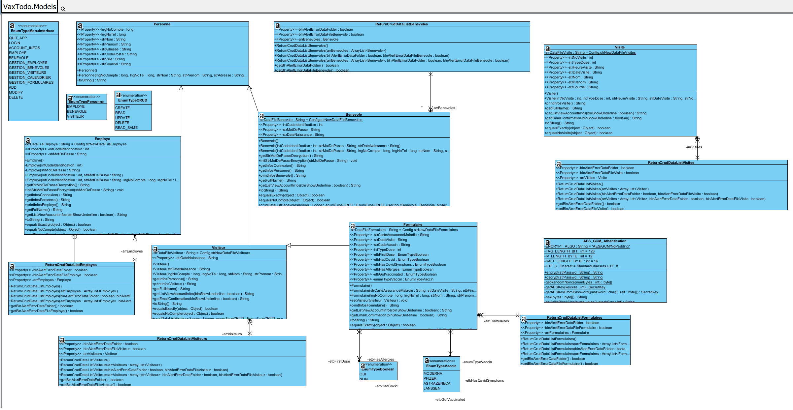
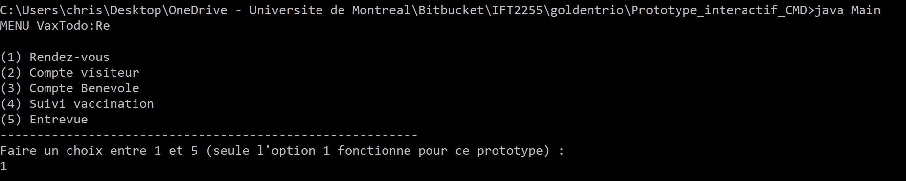
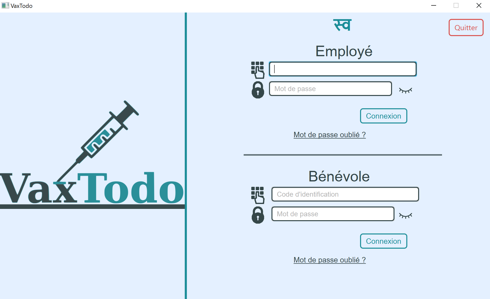
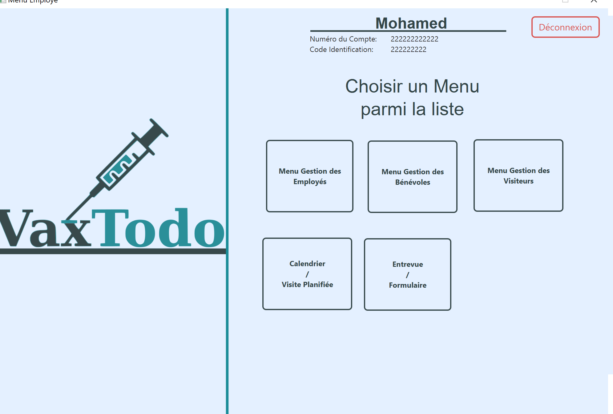
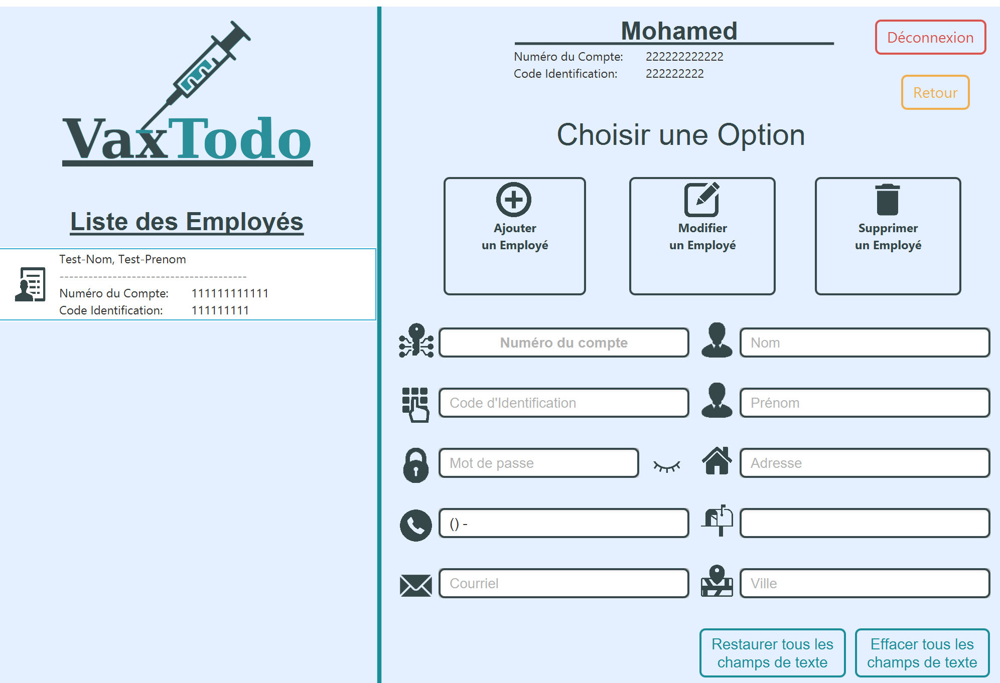
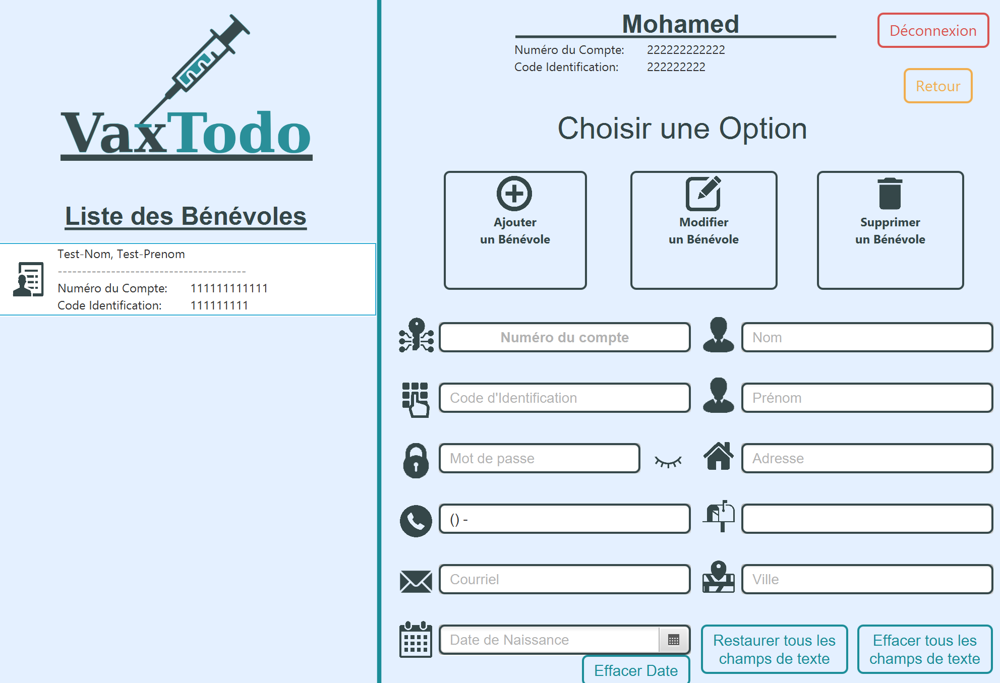
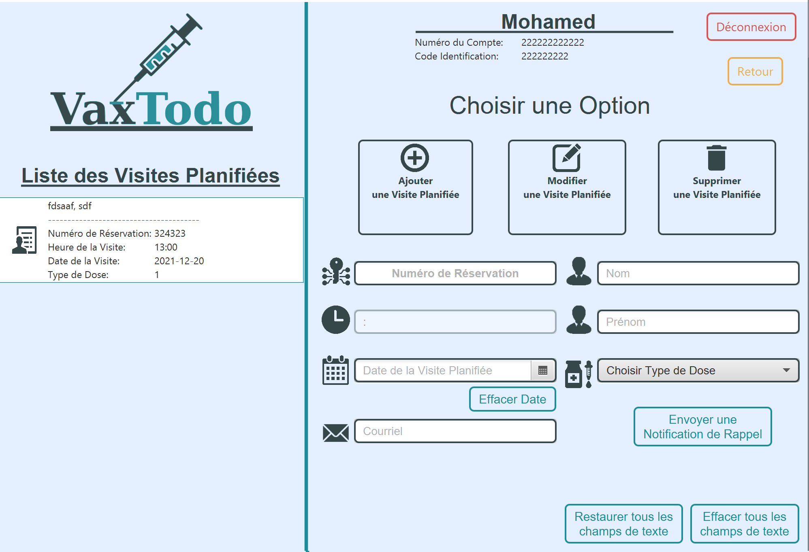
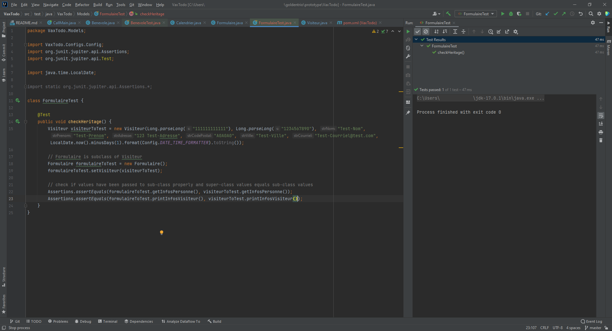
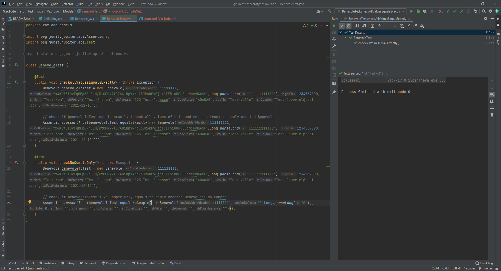

Planification
Description brève du domaine et du problème
Le domaine est le domaine médical. Le client ne s’y connait pas en informatique. Le client est l’OBNL GoodPeople qui a créé
l’initiative VaxTodo, qui vaccine les personnes majeures contre la COVID-19.
Le problème est que le client a de plus en plus de problèmes à respecter les dates de rendez-vous et à faire le suivi dans un
délai acceptable. Notre tâche est de créer un système qui guarantira les périodes de rendez-vous réservées et de faciliter le suivi.
Priorisation
Devoir 1 :
Nous avons d’abord priorisé l’analyse du texte, les entrevues avec le client et le glossaire afin de bien comprendre le domaine et le problème.
Ensuite, nous avons priorisé le diagramme des cas d’utilisation afin d’avoir une bonne base pour la rédaction des scénarios.
Par la suite, nous avons priorisé la rédaction des scénarios. Ensuite, nous avons travaillé sur l’analyse des risques et des besoin
non fonctionnels. Par la suite, nous avons travaillé sur le prototype papier et le prototype Java. Enfin, nous avons complété le rapport.
Devoir 2 :
Comme pour le devoir 1, nous avons d'abord priorisé l'analyse du texte afin de bien comprendre le problème. Nous avons ensuite priorisé
l'analyse et la correction de notre devoir 1, afin de s'assurer d'être sur la bonne voie. Par la suite, nous avons priorisé la conception
des diagrammes, afin d'avoir une bonne compréhension de la manière dont nous allions implémenter le système. Il aurait possiblement été plus
facile de débuter par le diagramme des activités, mais nous avons commencé par le diagramme des classes. Nous avons tout de même
travaillé sur prototype en même temps en priorisant la conception des classes, attributs, getter, setters et autres méthodes sans écrire
les méthodes en détails. Après avoir terminé les diagrammes, nous avons travaillé sur le prototype et avons rédigé les besoins matériels,
les exigences physiques et conceptuelles, et le rapport.
Devoir 3 :
Comme pour les devoirs 1 et 2, nous avons d'abord priorisé l'analyse du texte afin de bien comprendre le problème. Nous avons ensuite priorisé
l'analyse et la correction de notre devoir 2, afin de s'assurer d'être sur la bonne voie. Par la suite, nous avons priorisé l'application
VaxToDo, afin de s'assurer de ne pas avoir à remodifier les diagrammes, README et rapport plusieurs fois. Ensuite, nous avons effectué les
tests, puis nous avons finalisé le README, le rapport et les diagrammes.
Échanges avec le client
Nous avons eu deux rencontres avec le client. Avant notre première rencontre, le client avait déjà répondu à certaines
questions d’autres développeurs.
Lors de notre première rencontre, nous avons posé quatre questions :
- Y a-t-il des fonctionnalités que vous ne voulez absolument pas avoir?
- Le client a indiqué qu’il ne souhaite pas partager les données de vaccination avec aucune autre instance.
- Quelles sont vos contraintes particulières à propos du stockage des données, de la vie privée (information médicale
confidentielle), etc.?
- Le client a indiqué que, pour l’instant, il veut stocker les données sur un ordinateur chez GoodPeople servant de serveur, stockant toutes les données chez GoodPeople. Les enregistrements seront stockés sur un fichier texte sur le disque. Éventuellement, le client souhaite migrer vers une solution plus robuste.
- Y a-t-il des risques potentiels que vous entrevoyez (sécurité des données confidentielles, vaccination, etc.)?
- Le client a indiqué qu’il souhaite que ce soit nous qui analysions ces risques et que nous offrions des solutions.
- Quelle est votre stratégie après le lancement du système (maintenance, support, ajouts de fonctionnalités, etc.)?
- Le client a indiqué qu’il souhaite éventuellement migrer vers une solution plus robuste pour le stockage des données et possiblement migrer d’un système en ligne de commande à un système avec une interface graphique.
-
Nous entrevoyons des risques potentiels avec le système de stockage de données. Nous comprenons que votre budget est
limité et que cette solution est la meilleure possible pour le budget actuel. Cependant, il serait important de s'assurer
que l'ordinateur servant de serveur soit bien sécurisé. Il est important de ne pas placer le serveur dans la même pièce
que les autres ordinateurs. Y a-t-il un endroit où l'ordinateur pourrait être placé où l'usage pourrait être restreint?
Par exemple, une pièce servant uniquement au serveur et bien sécurisée, que les employés non autorisés ne pourraient pas
accéder? Il faut s'assurer que les pièces d'identité de toute personne voulant y accéder soient vérifiées, par exemple par
une carte ID en plus de clés physiques.
- Le client à répondu : Vous avez peut-être raison, le serveur devrait être protégé/isolé physiquement. Si possible nous aimerions éviter d'avoir encore recours au consultant. Notre local n'a qu'une seule grande pièce. Pouvez-vous nous décrire une solution simple?
Une solution à ce problème serait de garder le serveur fermé à clé, avec seulement quelques employés autorisés qui auraient accès à la clé et de s’assurer que seuls certains employés aient accès au système du serveur. Cela peut être assuré avec leur code d’employé à 9 chiffres, leur mot de passe habituel, ainsi qu’un mot de passe supplémentaire connu par les employés autorisés pour accéder au serveur.
Présentation des hypothèses
On suppose que les données sauvegardées sur le serveur doivent avoir un backup.
On suppose que l’entièreté des fonctionnalités du système doivent fonctionner continuellement durant les heures
de travail.
Compréhension du domaine
Après de nombreuses rencontres et une familiarisation avec l'activité VaxTodo, nous avons préparé un glossaire rassemblant les termes et expressions clés caractérisant l'environnement.
Glossaire
- Employé
- L'employé est un membre de l'équipe travaillant pour VAX:TODO, il s'occupe de la prise de rendez-vous, des visiteurs ainsi que de leur compte et des bénévoles. Identifié par son nom, prénom, adresse, numéro de téléphone, adresse courriel, code d'employé à 9 chiffres et mot de passe.
- Bénévole
- Le bénévole est un membre de l'équipe travaillant pour VAX:TODO. Il s'occupe de l'accueil des visiteurs et achemine les visiteurs vers les employés. Il ne peut pas accéder au système. Identifié par nom, prénom, adresse, numéro de téléphone et adresse courriel.
- Visiteur
- Un "client" de VAX:TODO. Il peut être un visiteur avec rendez-vous ou un visiteur
spontané (pas de rendez-vous).
Synonyme: Personne - Rendez-vous
- Rendez-vous pour la visite d'un vaccin. Dois être pris 72 heures à l'avance.
Synonyme: Réservation (réservation pour le rendez-vous) - Numéro de réservation
- Numéro unique produit lors de la réservation d'un rendez-vous
- Système
- "Logiciel" utilisé par les employés pour la gestion des rendez-vous, des employés et des visiteurs.
- Vaccin
- L'objectif principal de VAX:TODO, attribuer des vaccins. Identifié par un nom,
un code et un lot. Quatre types : Pfizer, Moderna, AstraZeneca, Jenssen.
Synonyme: Vaccination - Serveur
- Endroit où les données seront stockées. Pour l'instant le serveur est sur un ordinateur dans le local.
- Compte
- Un compte par visiteurs, contenant toute l'information nécessaire sur celui-ci.
Synonyme: Dossier - Compte fantôme
- Compte inutilisé. Ces comptes doivent être évités.
- Numéro unique à douze chiffres
- Numéro unique attaché au compte d'un visiteur.
Synonyme: Numéro de compte - Adresse courriel
- Unique à chaque visiteur, bénévole et employé, inscrite dans le compte du visiteur.
- Informations personnelles
- Nom, prénom, date de naissance adresse et numéro de téléphone du visiteur, inscrit
dans le compte du visiteur.
Synonyme: Données - Numéro carte assurance maladie
- Numéro unique de toute personne inscrite au système de santé québécois. Demandé lors de la confirmation du rendez-vous.
- Rapport de vaccination
- Rapport contenant les détails de chaque vaccination. Peut optionnellement être envoyé par courriel au visiteur concerné.
- Profil de vaccination
- Profil qui regroupe les informations liées aux vaccins reçus pour chaque compte visiteur contant : type de dose, identification du vaccin, date et heure de vaccination.
- Code d'employé à 9 chiffres
- Identifiant unique à chaque employé permettant d'accéder au système
- Mot de passe
- Série de caractères unique à chaque employé permettant l'authentification afin d'accéder au système. Composé d'au moins 8 caractères contenant au moins 1 chiffre, 1 majuscule, 1 minuscule et 1 caractère spécial.
- Professionnel de la santé
- Gens qui donnent les vaccins. Ils ne font pas partie de l'équipe GoodPeople. Goodpeople
s'occupe seulement de leur réserver un espace dans le local.
Synonyme: Vaccinateurs, chargeurs, injecteurs - Local
- Endroit où les vaccins sont donnés. Capacité maximum de 40 personnes, hors les professionnels de la santé et l'équipe.
- Visite planifiée
- Visite par un visiteur chez GoodPeople pour vaccination, dont la visite a été planifiée d'avance en prenant rendez-vous.
- Visite spontanée
- Visite par un visiteur chez GoodPeople pour vaccination, dont la visite est spontanée en se présentant sur place, sans rendez-vous pris d'avance.
- Questionnaire
- Formulaire papier donné aux visiteurs contenant des informations nécessaires reliées au client.
- Preuve de vaccination
- Un PDF contenant toutes les informations du vaccin que le visiteur a reçu. Il est envoyé
par courriel dans les 48h prochaines heures par l'employé.
Synonyme: Rapport de vaccination, Profil de vaccination - Code QR
- Code-barres matriciel unique au visiteur vacciné envoyé avec la preuve de vaccination.
- Calendrier
- Le calendrier indique les disponibilités possibles pour un nouveau rendez-vous et indique chaque rendez-vous.
- Dose
- Unité de vaccin administrée à un moment particulier. Il y a deux doses. La deuxième dose est administrée au minimum un mois après la première dose.
- Équipe
- Groupe de personne travaillant chez GoodPeople composé d'employés et de bénévoles.
- Calendrier
- Ficher où sont regroupés les rendez-vous résérvés avec leur date et heure, le nom complet du visiteur et le numéro de réservation.
- Confirmation de rendez-vous
- Message envoyé par courriel au visiteur afin de confirmer que les informations du rendez-vous.
- Traitement du dossier
- Création, modification et suppression des profils des visiteurs, des rendez-vous associés, des profils de vaccination et des confirmations de rendez-vous.
Modélisation du domaine
Cas d'utilisation

Scénarios
-
Cas d’utilisation: Création de rendez-vous
But: Une personne désire prendre un rendez-vous pour se faire vacciner chez GoodPeople
Préconditions: L’employé a un compte lui autorisant à prendre des réservations de rendez-vous.
Acteurs: Personne (principal), Employé (secondaire)
Scénario principal
- Une personne appelle GoodPeople pour prendre un rendez-vous pour se faire vacciner.
- L’employé demande à la personne la date et l’heure à laquelle il veut prendre le rendez-vous.
- L’employé vérifie si cette plage horaire est valide ou disponible dans le calendrier.
- L’employé lui demande ses informations (nom, prénom, type de dose, courriel).
- Le système confirme la prise de rendez-vous.
Scénarios alternatifs
-
3a.La plage horaire voulue par le client n’est pas disponible.
- 3a.1 L’employé demande à la personne une autre date et heure. Il peut lui en suggérer une proche de celle qu’il vient de dire juste avant.
- 3a.2 Le scénario reprend à l’étape 3.
-
9a.La date donnée par la personne est dans moins de 72 heures.
- 9b.1 L’employé demande à la personne une autre date et heure qui est dans plus de 72 heures.
- 9b.2 Le scénario reprend à l’étape 3.
Postconditions: Les détails contenant le prénom, le nom, le numéro de réservation, le type de dose, ainsi que la date et l’heure du rendez-vous sont sauvegardées. Ces détails sont envoyés par courriel à la personne. -
Cas d’utilisation: Modification de rendez-vous
But: Permettre à une personne de modifier son rendez-vous pour se faire vacciner chez GoodPeople.
Préconditions: L’employé a un compte lui autorisant à modifier des réservations de rendez-vous.
Acteurs: Visiteur (principal), Employé (secondaire)
Scénario principal
- Un visiteur contacte GoodPeople par téléphone pour modifier son rendez-vous
- L’employé demande au visiteur son numéro de réservation, son nom au complet, le type de dose, ainsi que la date et l’heure de son nouveau rendez-vous.
- Le visiteur fournit ces informations.
- L’employé vérifie si cette plage horaire est valide ou disponible dans le calendrier.
- L’employé confirme la requête avec le visiteur.
- Le visiteur confirme qu’il souhaite modifier son rendez-vous.
- Le menu principal du système invite à choisir une option.
- L’employé choisi « Liste des rendez-vous ».
- Le système affiche la liste des rendez-vous et invite à choisir une option.
- L’employé vérifie que le rendez-vous est présent dans la liste.
- L’employé choisit « Modification ».
- Le système invite à choisir le rendez-vous à modifier.
- L’employé choisit le rendez-vous à modifier.
- Le système affiche les données inscrites dans le rendez-vous et invite à confirmer la modification.
- L’employé change les informations inscrites avec les informations fournies par le visiteur.
- L’employé choisi « Modifier ».
- Le système modifie le rendez-vous.
- Le système affiche la confirmation de modification.
Scénarios alternatifs
-
3a.La plage horaire voulue par le client n’est pas disponible.
- 3a.1 L’employé demande à la personne une autre date et heure. Il peut lui en suggérer une proche de celle qu’il vient de dire juste avant.
- 3a.2 Le scénario reprend à l’étape 3.
-
10a.Le rendez-vous n’est pas présent dans la liste.
- 10a.1 L’employé demande à la personne de répéter ses informations de compte (numéro de réservation, nom complet, date et heure de son rendez-vous) en vérifiant qu’il n’y a pas d’erreurs.
- 10a.2 Si les nouvelles informations sont présentes dans la « Liste des rendez-vous », le scénario reprend à l’étape 10.
- 10a.3 Si les nouvelles informations ne sont toujours pas présentes dans la « Liste des rendez-vous », l’employé invite le visiteur à se créer un nouveau rendez-vous.
-
14a.Le visiteur ne veut pas modifier le rendez-vous (pas de date valide pour le prochain rendez-vous ou date lointaine dans le futur, etc.)
- 14a.1 L’employé confirme à l’utilisateur que le rendez-vous ne sera pas modifié.
- 14a.2 Le scénario se termine.
-
16a.L’employé choisit « Ne pas modifier ».
- 16a.1 L’employé confirme à l’utilisateur que le rendez-vous ne sera pas modifié.
- 16a.2 Le scénario reprend à l’étape 16.
Postconditions: Le rendez-vous est modifié. Un message de confirmation du nouveau rendez-vous est envoyé par courriel au visiteur. -
Cas d’utilisation: Suppression de rendez-vous
But: Permettre à une personne d’annuler son rendez-vous pour se faire vacciner chez GoodPeople
Préconditions: L’employé a un compte lui autorisant à supprimer des réservations de rendez-vous.
Acteurs: Visiteur (principal), Employé (secondaire)
Scénario principal
- Un visiteur contacte GoodPeople pour annuler son rendez-vous pour se faire vacciner.
- L’employé demande au visiteur son nom, ainsi que la date et l’heure de son rendez-vous.
- Le visiteur indique ces informations.
- L’employé confirme la requête avec le visiteur.
- Le visiteur confirme qu’il souhaite l’annulation de son rendez-vous.
- Le menu principal du système invite à choisir une option.
- L’employé choisi « Liste des rendez-vous ».
- Le système affiche la liste des rendez-vous et invite à choisir une option.
- L’employé vérifie que le rendez-vous est présent dans la liste.
- L’employé choisit « Suppression ».
- Le système invite à choisir le rendez-vous à supprimer.
- L’employé choisit le rendez-vous à supprimer.
- Le système affiche les données inscrites dans le rendez-vous et invite à confirmer la suppression.
- L’employé choisi « Supprimer ».
- Le système supprime le rendez-vous.
- Le système affiche la confirmation de suppression.
Scénarios alternatifs
-
8a.Le visiteur change d’idée et ne veut pas annuler le rendez-vous.
- 8a.1 L’employé confirme à l’utilisateur que le rendez-vous ne sera pas supprimé.
- 8a.2 Le scénario se termine.
-
9a.Le rendez-vous n’est pas présent dans la liste.
- 9a.1 L’employé demande à la personne de répéter son nom et la date et l’heure de son rendez-vous en vérifiant qu’il n’y a pas d’erreurs.
- 9a.2 Le scénario reprend à l’étape 3.
-
14a.L’employé choisit « Ne pas supprimer ».
- 14a.1 Le scénario reprend à l’étape 8.
Postconditions: Le rendez-vous est supprimé. Un message de confirmation de l’annulation du rendez-vous est envoyé par courriel au visiteur. -
Cas d’utilisation: Confirmation de rendez-vous
But: Permettre à l’employé d’envoyer une confirmation de rendez-vous
Préconditions: L’employé a un compte lui autorisant à accéder aux informations des comptes des visiteurs et de les modifier.
Acteurs: Employé (principal), Visiteur (secondaire)
Scénario principal
- Lors de la création, de la modification ou de la suppression d’un rendez-vous, l’employé a l’option de cocher ou décocher une case à cocher « Envoyée une confirmation » dans le menu du rendez-vous. La case à cocher est cochée par défaut.
- Pour toute future modification ou suppression du rendez-vous et tant que la case « Envoyer une confirmation lors d’une mise à jour » sera cochée, une confirmation sera automatiquement envoyée au visiteur.
- L’employé décide d’envoyer une confirmation manuelle à l’aide d’un bouton « Envoyer une confirmation maintenant » situé près de la case à cocher.
- Le système affiche un aperçu du courriel qui sera envoyé et demande une confirmation de l’envoi.
- L’employé accepte en appuyant sur « L’envoyer tel quel au visiteur [numéro de réservation, nom complet]».
- Le système envoie un courriel au visiteur détaillant les informations de son compte ainsi que du statut de la confirmation (maj automatique, suppression manuelle du compte par tel employé, etc.).
- Le système affiche la confirmation de l’envoi du courriel.
Scénarios alternatifs
- 4a.L’employé choisit « Ne pas envoyer ».
- 4a.1 Le scénario reprend à l’étape 3.
- 7a.L’envoi échoue
- 7a.1 Le système affiche que l’envoi s’est terminé par un échec et affiche le code d’erreur.
- 7a.2 Le scénario reprend à l’étape 4.
Postconditions: Un courriel de confirmation est envoyé au visiteur lui rappelant le statut de son rendez-vous (ajouté, modifié ou annulé). -
Cas d’utilisation: Création d’un compte Bénévole
But: Un bénévole désire aider GoodPeople et participe à la campagne de vaccination en tant que bénévole.
Préconditions: L’employé a un compte lui autorisant à créer des bénévoles dans le système
Acteurs: Bénévole (principal), Employé (secondaire)
Scénario principal
- Un bénévole se présente à l’accueil indiquant qu’il veut être bénévole.
- On le redirige vers un employé pour que celui-ci lui créer un compte.
- L’employé lui demande ses informations (nom, prénom, courriel, adresse, numéro de téléphone, ainsi que ses disponibilités pour venir au local).
- Le système valide les informations.
- Le système confirme la création du compte du bénévole.
Scénarios alternatifs
- Le système rejette le courriel du client, car il y a déjà un compte avec cette adresse
- 4a.1 Le système demande à l’employé d’entrer un nouveau courriel
- 4a.2 Le scénario reprend à l’étape 5
Postconditions: Le bénévole est sauvegardé dans le système. -
Cas d’utilisation: Modification d’un compte Bénévole
But: Permettre la modification des informations d’un compte Bénévole
Préconditions: L’employé a un compte lui autorisant la modification des comptes bénévoles dans le système
Acteurs: Bénévole (principal), Employé (secondaire)
Scénario principal
- Le menu principal du système invite à choisir une option.
- L’employé choisi « Liste des bénévoles ».
- Le système affiche la liste des bénévoles et invite à choisir une option.
- L’employé choisit « Modification ».
- Le système invite à choisir le bénévole à modifier.
- L’employé choisit le bénévole à modifier.
- Le système affiche les données du bénévole et invite à confirmer la modification.
- L’employé remplace les informations inscrites avec les informations fournies par le bénévole.
- L’employé choisi « Modifier ».
- Le système modifie les informations du bénévole.
- Le système affiche la confirmation de modification.
Scénarios alternatifs
- 8a.Le bénévole ne veut pas modifier ses informations de compte
- 8a.1 L’employé confirme au bénévole que ses informations de compte ne seront pas modifiées.
- 8a.2 Le scénario se termine.
- 4a.Les informations fournies ne sont pas présentes dans la liste.
- 4a.1 L’employé demande au bénévole de répéter ses informations de compte en vérifiant qu’il n’y a pas d’erreurs.
- 4a.2 Si les nouvelles informations sont présentes dans la « Liste des bénévoles », le scénario reprend à l’étape 4.
- 4a.3 Si les nouvelles informations ne sont toujours pas présentes dans la « Liste des bénévoles », l’employé invite le bénévole à se créer un nouveau compte.
- 9a.L’employé choisit « Ne pas modifier ».
- 9a.1 L’employé confirme au bénévole que les informations ne seront pas modifiées.
- 9a.2 Le scénario reprend à l’étape 9.
Postconditions: Les informations du bénévole sont modifiées. -
Cas d’utilisation: Suppression d’un compte Bénévole
But: Un bénévole peut être supprimé s’il arrête de collaborer avec VaxTodo
Préconditions: L’employé a un compte lui autorisant à supprimer le compte d’un bénévole. Le bénévole arrête de collaborer avec VaxTodo.
Acteurs: Bénévole (principal), Employé (secondaire)
Scénario principal
- Le menu principal du système invite à choisir une option.
- L’employé choisi « Liste des bénévoles ».
- Le système affiche la liste des bénévoles et invite à choisir une option.
- L’employé choisit « Suppression ».
- Le système invite à choisir le bénévole à supprimer.
- L’employé choisit le bénévole à supprimer.
- Le système affiche les données du bénévole et invite à confirmer la suppression.
- L’employé choisi « Supprimer ».
- Le système supprime le bénévole.
- Le système affiche la confirmation de suppression.
Scénarios alternatifs
- 5a.L’employé choisit « Ne pas supprimer ».
- 5a.1 Le scénario reprend à l’étape 3.
Postconditions: Le bénévole est supprimé. -
Cas d’utilisation: Création d’un compte Visiteur
But: Une personne qui vient se faire vacciner se doit d’avoir un compte.
Préconditions: L’employé a un compte lui autorisant à créer le compte d’un visiteur qui vient se faire vacciner. La personne est passée par la file d’attente et a été appelée par un employé.
Acteurs: Visiteur (principal), Employé (secondaire)
Scénario principal
- Le visiteur se présente au bureau de l’employé
- L’employé confirme son rendez-vous avec son nom et l’heure de la visite.
- L’employé lui demande ensuite ses informations personnelles (nom, prénom, adresse, numéro de téléphone, courriel, date de naissance)
- L’employé entre les informations dans le système
- Le système valide les informations
- Le système confirme la création du compte et affiche le numéro unique du compte.
- L’agent communique le numéro unique de son compte.
Scénarios alternatifs
- 5a.Le système rejette le courriel du client, car il y a déjà un compte avec cette adresse
Postconditions: Le compte du visiteur est sauvegardé. -
Cas d’utilisation: Modification d’un compte Visiteur
But: Permettre la modification des informations d’un compte visiteur
Préconditions: L’employé a un compte lui autorisant à supprimer le compte d’un visiteur. Si le visiteur demande la modification de son compte en personne, il est passé par la file d’attente et a été appelé par un employé.
Acteurs: Visiteur (principal), Employé (secondaire)
Scénario principal
- Le visiteur contacte VaxTodo par courriel, par téléphone ou en personne et demande la modification de son compte.
- L’employé confirme la requête avec le visiteur.
- Le visiteur confirme qu’il souhaite la modification de son compte.
- Le menu principal du système invite à choisir une option.
- L’employé choisi « Liste des comptes des visiteurs ».
- Le système affiche la liste des comptes et invite à choisir une option.
- L’employé choisit « Modification ».
- Le système invite à choisir le compte à modifier.
- L’employé choisit le compte à modifier.
- Le système affiche les données inscrites dans le compte et invite à confirmer la modification.
- L’employé remplace les informations du compte avec les informations fournies par le visiteur.
- L’employé choisi « Modifier ».
- Le système modifie les informations du compte.
- Le système affiche la confirmation de modification.
Scénarios alternatifs
- 3a.Le visiteur ne veut pas modifier ses informations de compte
- 3a.1 L’employé confirme au visiteur que ses informations de compte ne seront pas modifiées.
- 3a.2 Le scénario se termine.
- 6a.Les informations fournies ne sont pas présentes dans la liste.
- 6a.1 L’employé demande au visiteur de répéter ses informations de compte en vérifiant qu’il n’y a pas d’erreurs.
- 6a.2 Si les nouvelles informations sont présentes dans la « Liste des comptes des visiteurs », le scénario reprend à l’étape 6.
- 6a.3 Si les nouvelles informations ne sont toujours pas présentes dans la « Liste des comptes des visiteurs », l’employé invite le visiteur à se créer un nouveau compte.
- 12a.L’employé choisit « Ne pas modifier ».
- 12a.1 L’employé confirme au visiteur que les informations ne seront pas modifiées.
- 12a.2 Le scénario reprend à l’étape 12.
Postconditions: Les informations de compte du visiteur sont modifiées. -
Cas d’utilisation: Suppression d’un compte Visiteur
But: Le compte d’un visiteur peut être supprimé à la demande du visiteur.
Préconditions: L’employé a un compte lui autorisant à supprimer le compte d’un visiteur. Si le visiteur demande la suppression de son compte en personne, il est passé par la file d’attente et a été appelé par un employé.
Acteurs: Visiteur (principal), Employé (secondaire)
Scénario principal
- Le visiteur contacte VaxTodo par courriel, par téléphone ou en personne et demande la suppression de son compte.
- L’employé confirme la requête avec le visiteur et lui indique que la suppression est finale.
- Le visiteur confirme qu’il souhaite la suppression de son compte.
- Le menu principal du système invite à choisir une option.
- L’employé choisi « Liste des comptes des visiteurs ».
- Le système affiche la liste des comptes et invite à choisir une option.
- L’employé choisit « Suppression ».
- Le système invite à choisir le compte à supprimer.
- L’employé choisit le compte à supprimer.
- Le système affiche les données inscrites dans le compte et invite à confirmer la suppression.
- L’employé choisi « Supprimer ».
- Le système supprime le compte.
- Le système affiche la confirmation de suppression.
Scénarios alternatifs
- 3a.Le visiteur change d’idée et ne veut pas supprimer le compte.
- 3a.1 L’employé confirme à l’utilisateur que le compte ne sera pas supprimé.
- 3a.2 Le scénario se termine.
- 11a.L’employé choisit « Ne pas supprimer ».
- 11a.1 Le scénario reprend à l’étape 6.
Postconditions: Le compte du visiteur est supprimé. -
Cas d’utilisation: Suivi de la vaccination
But: Le suivi de vaccination a pour but d’envoyer par courriel le rapport de vaccination au visiteur et lui rappelant la date de son prochain rendez-vous s’il y a lieu.
Préconditions: L’employé a un compte permettant d’envoyer le suivi au visiteur. L’employé détient les informations du visiteur.
Acteurs: Visiteur (principal), Employé (secondaire)
Scénario principal
- Le visiteur vient de se faire vacciner et quitte le local.
- L’employé sélectionne le compte du visiteur
- L’employé sélectionne l’option d’envoyer une notification par courriel
- Le système affiche une confirmation d’envoi de la notice.
Scénarios alternatifs
- 3a.Le profil de vaccination n’a pas encore été créé.
- 3a.1 Le scénario se termine.
Postconditions: Une petite phrase indique sur le profil du visiteur que le suivi a été fait sur ce compte. -
Cas d’utilisation: Entrevue et Questionnaire
But: Lorsqu’une personne se présente à son rendez-vous, un employé lui demande certaines informations.
Préconditions: L’employé a un compte lui autorisant à accéder aux informations des comptes des visiteurs et de les modifier.
Acteurs: Personne (principal), Employé (secondaire)
Scénario principal
- Une personne en file pour son rendez-vous est appelée par l’employé.
- L’employé accède à la liste des rendez-vous du système.
- L’employé demande le nom et l’heure du rendez-vous à la personne.
- La personne indique ces informations.
- L’employé confirme le rendez-vous.
- L’employé se trouve dans le questionnaire propre au rendez-vous à partir de la liste des rendez-vous.
- L’employé remplit le questionnaire en demandant à la personne son nom, prénom, la date de la visite et quel vaccin elle veut recevoir.
- La personne indique ces informations.
- L’employé continue en lui demandant sa carte maladie, note le numéro et lui demande si elle a déjà contracté la COVID, si elle a des symptômes de la COVID et si elle a des allergies.
- La personne montre sa carte maladie et répond non à toutes ces questions.
- L’employé lui demande si elle a déjà reçu une première dose.
- La personne répond oui.
- L’employé sauvegarde le questionnaire, donne un billet numéroté à la personne et la dirige vers la file d’attente.
Scénarios alternatifs
- 5a.Il n’y a pas de rendez-vous planifié avec ces informations.
- 5a.1 L’employé invite la personne à prendre rendez-vous.
- 5a.2 Le scénario se termine.
- 10a.La personne n’a pas de carte d’assurance maladie valide et/ou répond oui à une ou plusieurs de ces questions.
- 10a.1 L’employé indique à la personne que VaxTodo ne peut pas la vacciner et lui indique de contacter INFO-SANTÉ.
- 10a.2 Le scénario se termine.
Postconditions: Le questionnaire est sauvegardé et envoyé aux professionnels de la santé. -
Cas d’utilisation: Ajout profil de vaccination au compte d’un visiteur
But: Mettre à jour le compte d’un visiteur après qu’il ait reçu le vaccin.
Préconditions: L’employé a un compte lui autorisant à accéder aux informations des comptes des visiteurs et de les modifier.
Acteurs: Employé (principal), Visiteur (secondaire)
Scénario principal
- Après que le visiteur ait reçu son vaccin, l’employé lui créer un profil de vaccination qui contient toutes les informations liées aux vaccins reçus (type de dose, identification du vaccin, date et heure de vaccination).
- Dans le menu « Liste des comptes des visiteurs », l’employé choisit le visiteur en question.
- Dans le menu du visiteur, l’employé choisit l’option « Ajouter un profil de vaccination ».
- L’employé remplit les champs de saisie avec les informations de vaccinations (numéro de compte, date, type de dose, nom du vaccin, code du vaccin, lot du vaccin).
- L’employé choisit d’ajouter le profil avec « Sauvegarder ce profil ».
- Le système renvoie une confirmation de la sauvegarde du profile.
- L’employé choisi « Ajouter ».
- Le système ajoute le profile et met à jour le compte du visiteur.
- Le système envoie une confirmation courriel au visiteur.
Scénarios alternatifs
- 2a.Les informations du compte visiteur ne sont pas présentes dans la liste.
- 2a.1 L’employé demande au visiteur de répéter ses informations de compte en vérifiant qu’il n’y a pas d’erreurs.
- 2a.2 Si les nouvelles informations sont présentes dans la « Liste des comptes des visiteurs », le scénario reprend à l’étape 2.
- 2a.3 Si les nouvelles informations ne sont toujours pas présentes dans la « Liste des comptes des visiteurs », l’employé invite le visiteur à se créer un nouveau compte.
- 6a.Les informations entrées par l’employé ne sont pas dans le bon format.
- 6a.1 Le système indique de corriger les informations entrées.
- 6a.2 Le scénario reprend à l’étape 4.
- 7a.L’employé choisit « Ne pas ajouter ».
- 7a.1 Le scénario reprend à l’étape 4.
Postconditions: Le profil de vaccination est ajouté au compte du visiteur. Le visiteur reçoit une confirmation courriel. -
Cas d’utilisation: Consulter calendrier
But: Consulter le calendrier d’une journée pour voir les rendez-vous prévus.
Préconditions: L’employé a un compte lui autorisant à accéder au calendrier des rendez-vous.
Acteurs: Employé (principal)
Scénario principal
- L’employé sélectionne l’option de voir le calendrier
- L’employé choisi la journée dont il désire voir le calendrier.
- Le calendrier de la journée s’affiche avec toutes les réservations et les heures.
-
Cas d’utilisation: Imprimer calendrier
But: Imprimer le calendrier des rendez-vous pour le donner aux bénévoles.
Préconditions: L’employé a un compte lui autorisant à accéder au calendrier des rendez-vous.
Acteurs: Employé (principal), Bénévole (secondaire)
Scénario principal
- En arrivant le matin, l’employé sélectionne l’option d’imprimer le calendrier.
- L’employé choisit le nombre de copies à imprimer.
- L’employé est retourné au menu principal.
- L’employé distribues ensuite les copies du calendrier aux bénévoles.
Analyse
Notre analyse préliminaire nous a permis d’analyser les risques et les exigences non fonctionnelles de VaxxTodo:Re. Elle nous a également permis d'analyser les besoins matériels et les contraintes physiques et conceptuelles de VaxToDo:Re. Enfin, elle nous a permis d'analyser le comportement du système à l'aide de modèles d'analyse dynamique : les diagrammes d'activités.
Risques
Classement en fonction de la sévérité du risque.-
Risque de donner une dose de vaccin à une personne qui n’est pas censée en avoir.
Ce risque est le plus sévère, car donner une dose de vaccin à une personne étant allergique au vaccin, étant déjà infectée par la COVID ou donner une dose de trop peut causer de très graves effets secondaires ou peut même être mortel dans le pire des cas. -
Il pourrait y avoir une fuite des informations confidentielles des utilisateurs du système sauvegardées dans le serveur, incluant des données médicales, si elles étaient mal sécurisées.
Ce risque est sévère, car des informations très confidentielles, telles que la date de vaccination, le type de vaccin et le numéro de la carte d’assurance maladie des visiteurs sont sauvegardés. Une fuite pourrait permettre à certains d’obtenir illégalement le passeport vaccinal des visiteurs, de voler leur identité ou de les harceler. -
Une corruption du fichier texte stocké sur le disque du serveur, contenant toutes les données du système, pourrait causer la perte permanente des données.
Ce risque est sévère, car tous les comptes, rendez-vous, mots de passe, informations relatives à la vaccination, etc. seraient perdus. Cela causerait de graves retards, l’annulation ou le report des rendez-vous et d’autres problèmes. Cela pourrait également causer certains patients à ne pas pouvoir avoir accès à leur passeport vaccinal. -
Une mauvaise utilisation ou sauvegarde du questionnaire pourrait faire en sorte qu’une personne soit vaccinée par le mauvais vaccin.
Par exemple, si un bogue causait un problème avec les données du questionnaire et que le questionnaire reçu par les professionnels de la santé avait le mauvais type de vaccin sélectionné. Ce risque est important, car cela pourrait violer le droit fondamental au choix de traitement du visiteur. -
Si l’information par rapport à la vaccination est mal sauvegardée, les visiteurs pourraient ne pas avoir accès à leur passeport vaccinal.
Par exemple, si un bogue faisait en sorte que la vaccination d’un visiteur était enregistrée comme la vaccination d’un autre visiteur ou pas enregistrée du tout. Ce risque est important, car sans passeport vaccinal, une personne ne pourrait pas voyager, avoir accès à certains services non essentiels ou même travailler dans certains cas.
Exigences non-fonctionnelles
- L’interface doit être intuitive et facile à interagir avec.
- Le système doit être utilisé par plusieurs employés et les données doivent être disponibles lors d’un accès multiple.
- Le système doit être flexible pour de futurs changements comme le support de nouvelles spécifications ou commenter le code source pour la facilité d’utilisation par de futurs nouveaux jeunes programmeurs.
- Les informations personnelles des visiteurs doivent être gardées de manière sécuritaire.
- Le code d'employé doit être unique et avoir 9 chiffres.
- Les mots de passe des employés doivent être uniques et être composés moins 8 caractères contenant au moins 1 chiffre, 1 majuscule, 1 minuscule et 1 caractère spécial.
- L'entièreté des fonctionnalités du système doit être constamment fonctionnelle durant les heures de travail.
- Le système doit respecter les lois sur la protection de la vie privée et protéger les informations contre des acteurs malveillants.
- La documentation doit être éclairée et facile à comprendre pour le bon maintien du logiciel dans le futur.
- Les données sauvegardées doivent demeurer intègres. Elles ne doivent pas être modifiées accidentellement dû à des bogues.
- Le système doit s’exécuter sur divers environnements de travail.
- Le système doit permettre d'envoyer des courriels directement à partir du système.
- Le système ne doit pas être lourd en termes de la taille du disque et il doit être facile à transporter et à installer.
- Le système ne doit pas coûter cher à développer et à maintenir.
- Le système doit supporter différentes langues et localisations (Français, Anglais, etc).
Besoins matériels
1. Partie à informatiser
Comme il s’agit d’une application à petit volume et que le budget est limité, la meilleure option est d’utiliser un mode interactif avec des ordinateurs sur place qui sera utilisé par les employés. La partie de gestion de rendez-vous (et calendrier), de gestion de compte du bénévole et du visiteur ainsi que le suivi et rapport de vaccination pour chaque visiteur serra informatiser.
2. Matériel nécessaire
- Ordinateurs sur place. Comme il s’agit d’un logiciel plutôt simple qui ne demande pas trop de puissance, les ordinateurs ne doivent pas nécessairement être très puissante.
- Disque dur internes et externes (optionnellement, pour avoir des copies).
- Imprimante pour pouvoir imprimer les calendriers. Comme il ne s’agit pas d’images demandant de très grosse qualité, une imprimante à jet ou laser fera amplement le travail. Cependant, nous conseillerons une imprimante au laser, car cela serait beaucoup plus économique à long terme (plus d’impression avec une seule cartouche).
3. Solution de stockage
Il y aura une base de données qui sauvegardera à l’aide de rangées et de colonnes toutes les données
importantes et nécessaire à l’utilisation du logiciel.
Les données seront stockées dans le dossier src/Data/ en format .csv.
Tout sera sauvegardé sur le disque dur de l’ordinateur et il sera possible de facilement transférer
les données vers un disque dur externe pour avoir des « back-up ».
Contraintes physiques et conceptuelles
Il y a au maximum 15 visites par plage horaire d'une heure (8h, 9h, ..., 16h, 17h), donc au maximum 150
visites par jour, au maximum 5 visites en parallèle, d'une durée de 30 à 45 minutes chacune et au maximum
40 visiteurs dans le local en même temps. Les locaux sont ouverts 10 heures par jour, de 8h à 18h.
GoodPeople dispose d'une douzaine d'ordinateurs, dont un servira de serveur.
VaxToDo:Re, les models et les views ont une taille de ~500 KB.
Il y a 8 fichiers csv d'une taille initiale de ~50-140 B.
Chaque nouvel élément sauvegardé dans un fichier csv prend ~25-130 B en fonction du nombre de cases
sauvegardées.
Un compte employé ou bénévole prend ~130 B.
Assumant que le total des employés et bénévoles est d'environ 22 (car il y a une douzaine d'ordinateurs et
l'un d'entre eux est utilisé comme serveur, les locaux sont ouverts 10 h/jour, 5 jours/semaine,
donc 50 h/semaine et on assume que la moyenne d'heures de travail des employés et bénévoles
est de 25 h/semaine), la taille initiale totale des comptes employés et bénévoles est ~3.2 KB.
Ainsi, la taille initiale du système (Java + csv) avant de tenir compte des visiteurs serait ~1.3 MB.
Puisqu'une plage horaire dure une heure et est limitée à 15 rendez-vous, assumant le pire cas où chaque
nouveau rendez-vous est une première visite, donc où il faut créer un nouveau compte visiteur à chaque fois,
il faut créer 15 éléments par heure dans les fichiers csv Visiteurs, SuivisVaccination, RendezVous,
RapportsVaccination, Entrevues, Calendriers. Le volume maximal d'entrée par heure est donc ~9.6 KB/h.
Il y a 10 plages horaires d'une heure par jour (8h, 9h, ..., 16h, 17h). Le volume maximal d'entrée par jour
est donc ~96 KB/jour.
Les locaux sont ouverts 5 jours/semaine, il y a au plus 22 jours de semaine (lundi au vendredi) par mois.
Le volume maximal d'entrée par mois est donc ~2.1 MB/mois.
Il y a au plus 252 jours de semaine non fériés dans une année (si elle est bissextile). Le volume maximal
d'entrée par année est donc ~532 MB/année.
Il faut que le disque dur du serveur ait au minimum 4 GB pour pour avoir un système d'opération tel qu'un
système "mini Linux" pouvant gérer la ligne de commande, les fichiers et l'envoi des courriels, et contenir
l'équivalant d'au moins quatre ans (~2 GB) de données.
Les ordinateurs des employés et bénévoles doivent avoir des disques durs d'au minimum 1 GB pour utiliser un
système d'opération du type "mini Linux" pouvant gérer la ligne de commande et une connexion au serveur.
Si GoodPeople prévoit éventuellement augmenter sa quantité d'employés, de bénévoles et de visiteurs, rajouter
des fonctionnalités au système tels qu'une interface graphique, etc., les disques durs devraient être avoir
plus d'espace de stockage. Dans ce cas, afin de tenir compte de toutes les situation possibles, nous
recommanderions des disques durs d'au minimum 32 GB pour chaque ordinateur avec un système d'opération moderne
tel que Linux Mint ou Windows 10.

Conception
Notre conception nous a permis d'avoir une bonne compréhension de la manière dont nous allions implémenter le système VaxToDo:Re, des classes et de leurs interactions, des attributs, des méthodes et de l'ordre dans lequel elles interagissent entre elles en fonction du temps.
Justification des choix du design: Abstraction, couplage et cohésion
Nous visons une haute cohésion. Nos classes ont des buts particuliers restreints. Chaque classe a son propre
but. La majorité des classes et interfaces n'ont qu'une seule tâche précise. L'interface VaxTodo en a trois :
la gestion des rendez-vous et des comptes des bénévoles et des visiteurs. Le menu s'occupe d'afficher le
texte à l'écran et de permettre à l'utilisateur de sélectionner
les options du menu. Les employés et les bénévoles ont un code et un mot de passe et interagissent avec le
menu. Visiteur sert à gérer les visiteurs, leur rapport de vaccination et leur questionnaire. Ces deux
derniers sont implémentées par des classes qui n'ont qu'un identifiant ainsi que des attributs équivalant
aux questions posées. SuiviVaccination sert à gérer le suivi de la vaccination, incluant l'envoi du rappel
de vaccination.
Nous visons un couplage bas. Nous minimisons les relations et la dépendance entre les classes. Changer
quelque chose dans une des classes n'affecte pas les autres. La majorité des classes ont un lien avec
la classe Employe, certaines également avec Benevole, car les bénévoles ont un accès restreint. Certaines
ont un lien avec Visiteur, seulement lorsque le visiteur est impliqué dans la tâche à laquelle sert la
classe. Le reste sont des relations d'implémentation pour les interface et d'inhéritence pour la classe
Personne.
La classe Personne est utilisée par Employe, Benevole et Visiteur, car plusieurs attributs sont utilisés
par les trois autres classes. Également, l'interface VaxTodo est implémentée par Employe et Benevole, qui
utilisent le système, et par Menu, qui appelle ses méthodes lorsque l'utilisateurs sélectionne une option.
Nous avions initalement une seconde interface Calendrier avec la méthode imprimerCalendrier() et implémentée
par RendezVous, mais nous avons décidé de simplement placer la méthode dans RendezVous et de retourner la
liste des rendez-vous.
Diagramme de classes
Prototype du devoir 1
-

Menu Principal.
L'utilisateur est invité à séléctionner une option. -

L'utilisteur se trouve dans le menu 'Liste des rendez-vous' -

L'utilisateur se trouve dans le menu 'Modification de rendez-vous' -

L'utilisateur se trouve dans le menu 'Modification de rendez-vous' et souhaite modifier l'heure du rendez-vous.
Il doit choisir l'heure du rendez-vous. -

L'utilisateur se trouve dans le menu 'Modification de rendez-vous' et souhaite modifier l'heure du rendez-vous.
Il doit choisir la minute souhaitée. -

L’heure du rendez-vous a été modifiée avec succès.
Retour au menu précédent.
Implémentation
Prototype du devoir 2 en ligne de commande
Application avec GUI en JavaFX
-

Menu de connexion
L'unilisateur est invité à choisir entre connexion employé et bénévole. Il peut quitter l'application en sélectionnant Quitter. -

Menu principal de l'employé
L'employé est invité à séléctionner une option. Le nom, le numéro de compte et le numéro d'identification de l'employé sont visibles en haut. Il peut se déconnecter en sélectionnant Déconnexion et retourner au menu précédent en sélectionnant Retour. -

Menu de gestion des employés
L'employé est invité à séléctionner une option ou à entrer des informations. -

Menu de gestion des bénévoles.
L'employé est invité à séléctionner une option ou à entrer des informations. -

Menu de gestion des visiteurs.
L'employé est invité à séléctionner une option ou à entrer des informations. -

Menu du calendrier
L'employé est invité à séléctionner une option ou à entrer des informations. -

Menu du formulaire
L'employé est invité à séléctionner une option ou à entrer des informations.
Tests unitaires
Captures d'écran des six tests unitaires
-

Deux tests pour la classe AES_GCM_Athentification
Teste l'encryption du mot de passe en testant que le mot de passe encrypté n'est pas égal au mot de passe entré en string et teste la décryption du mot de passe en testant que le mot de passe décrypté est égal au mot de passe entré en string. -

Deux tests pour la classe Formulaire
Teste que les valeurs du formulaires on été correctement passées à la sous-classe de type Visiteur et teste que les valeurs de la super-classe de type Formulaire sont égales à celles de la sous-classe de type Visiteur. -

Deux tests pour la classe Benevole
t Teste qu'un bénévole déjà créé (benevoleToTest) a exactement les même valeurs qu'un bénévole que l'on crée sur le champ et teste que si on n'entre qu'un numéro de compte pour le bénévole créé sur le champ qui est le même que celui de benevoleToTest, leurs numéros de compte sont égaux.